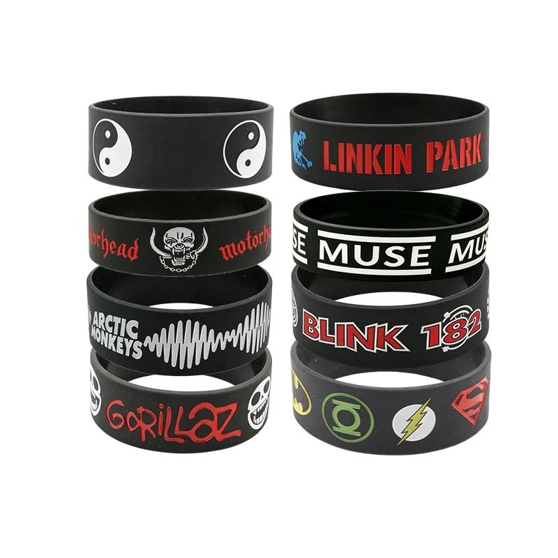

What Type of Silicone Wristband Manufacturer Do You Need?
Before comparing suppliers, define the type of order you are planning. A supplier that is suitable for a small online retail order may not be suitable for an importer who needs repeat shipments, mixed colors, private label packaging, or distributor-ready cartons.
Common buyer types include promotional product companies, importers buying assorted wristbands in bulk, charity organizations, medical supply distributors, e-commerce sellers, event suppliers, and brand owners requiring private label packaging.
A good manufacturer should understand not only how to produce the product, but also how the product will be sold, packed, shipped, and inspected.
Key Criteria for Evaluating a Custom Silicone Wristband Manufacturer
1. Product Range and Manufacturing Experience
A reliable silicone wristband factory should be able to produce more than one basic wristband style. Product range matters because it shows whether the manufacturer understands different molding, printing, finishing, and packaging requirements.
- Printed, debossed, embossed, and ink-filled silicone wristbands
- Segmented, swirl, tie-dye, 1-inch, and slap bracelet styles
- Silicone medical ID wristbands and charity awareness bands
2. Material Understanding and Testing Awareness
Silicone wristbands are often worn directly on the skin. Buyers should ask suppliers about material type, color additives, surface finishing, odor control, and available test reports.
Responsible compliance wording matters. Instead of vague phrases such as "FDA certified," use specific wording where supported, such as "SGS tested to US FDA 21 CFR 177.2600 total extractives" or "SGS tested according to LFGB-related food contact requirements."
3. Logo and Design Capability
Custom wristbands are usually purchased because the buyer needs a message, logo, symbol, QR code, or campaign phrase. Common logo methods include screen printing, debossed text, embossed text, ink-filled debossed logo, engraving for medical ID styles, color coating, segmented color design, and QR-style artwork.
4. Sample Approval Before Mass Production
For wholesale orders, sample approval helps confirm color, size, logo position, text readability, surface finish, packaging, and overall appearance. Buyers should check size, thickness, color accuracy, logo clarity, text spelling, surface finish, packaging layout, and carton mark format before approval.
Comparing silicone wristband factories?
Send Vobran your product type, quantity, artwork, packaging request, and target country. Our team can review your requirements and suggest a suitable production plan.
Get a Quote5. Quality Control and Shipment Inspection
Quality control should not only happen after production. A practical factory checks raw material and color confirmation, mold and size, logo position, random production samples, surface defects, quantity, packaging, labeling, and final carton readiness.
6. Packaging Support for Wholesale Buyers
Packaging affects retail presentation, shipping cost, warehouse handling, and customer experience. Common options include bulk polybag packing, individual bags, mixed color sets, retail card packaging, private label packaging, display boxes, carton labeling, barcode labels, and SKU labels.
7. Communication and RFQ Clarity
A complete RFQ should include product type, quantity, size, color, logo method or artwork file, packaging requirement, target market, expected delivery date, shipping destination, and required test reports.
Common Mistakes When Choosing a Supplier
Choosing Only by Unit Price
The lowest unit price may not include proper material, color matching, artwork checking, packaging, or inspection.
Ignoring Sample Details
A sample is the buyer's chance to verify the product before mass production. If the sample is not carefully reviewed, errors may repeat across the full order.
Using Vague Artwork Instructions
Provide clear artwork, logo files, Pantone or color reference, size requirements, and placement instructions.
Not Confirming Packaging Early
Retail cards, labels, barcodes, mixed sets, and carton marks should be confirmed before production begins.
FAQ
What should I ask a silicone wristband manufacturer before ordering?
Ask about product type, material, logo method, MOQ, sample process, lead time, packaging options, inspection process, and available test reports.
Is a factory better than a trading company for silicone wristbands?
For repeated wholesale orders, a source manufacturer can usually provide better control over sampling, production, customization, and inspection.
Can custom silicone wristbands be made in different colors?
Yes. Common options include solid colors, segmented colors, swirl colors, tie-dye effects, marble effects, and assorted color packs.
How can I reduce risk before placing a bulk order?
Prepare a clear RFQ, approve a sample, confirm packaging, check logo details, and request final inspection photos before shipment.
Conclusion
Choosing a custom silicone wristband manufacturer requires more than checking a price list. A good supplier should understand product types, materials, logo methods, sample confirmation, quality control, packaging, and shipment preparation.
Need a custom silicone wristband manufacturer?
Contact Vobran with your artwork, quantity, product type, and packaging requirements.
Send Your RequirementsImage Planning & AI Prompts
Hero product image: Photorealistic B2B product photography of assorted custom silicone wristbands on a clean factory table, different colors and logo styles, professional lighting, no fake brand logos, no watermark.
Factory production: Realistic clean silicone product factory workshop with operators checking molded wristbands, industrial equipment, blue and white clean production environment.
Sample approval: Close-up of a quality inspector checking custom silicone wristband samples beside color swatches and printed artwork sheets.
Shipment inspection: Photorealistic shipment inspection scene with cartons, polybags of silicone wristbands, checklist clipboard, clean warehouse table.